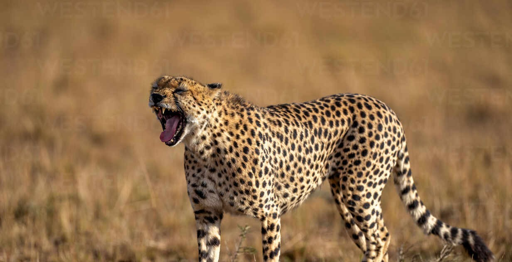

¿Qué es el guepardo sudafricano?
El guepardo sudafricano es una subespecie del guepardo que habita principalmente en el sur de África. Es conocido por su gran velocidad y su cuerpo esbelto, diseñado para la caza.

El guepardo sudafricano es una subespecie del guepardo que habita principalmente en el sur de África. Es conocido por su gran velocidad y su cuerpo esbelto, diseñado para la caza.
Vive en sabanas, praderas y zonas abiertas donde puede correr a gran velocidad para cazar a sus presas.